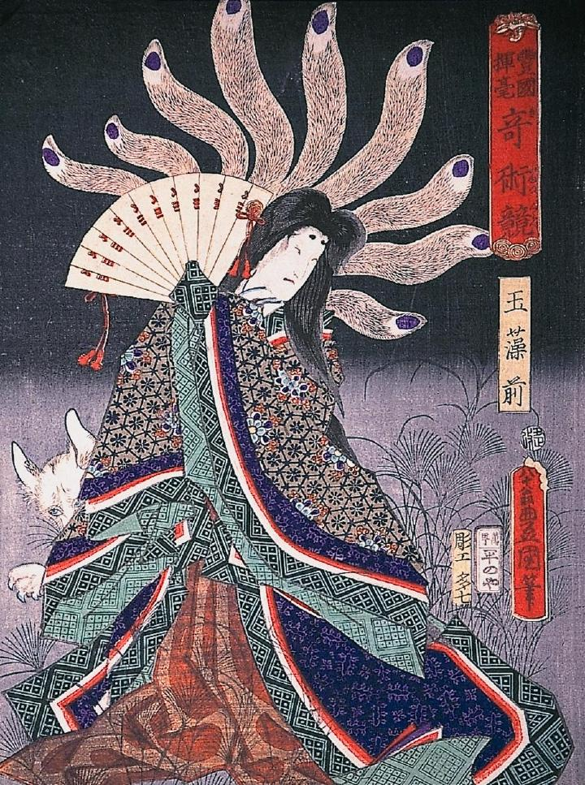

扇を手にした着物姿の女が、ススキ生い茂る野原に立っている。その後ろには九尾の狐がおり、尾を女の頭上に広げている。
著作者：国貞初代／出典：親書誌：A963_ferenchopp_0002：奇術競玉藻前；キジュツクラベタマモノマエ／日付：2011／資源識別子：A963_ferenchopp_0002_0001_0000
Copyright (c)2010- International Research Center for Japanese Studies, Kyoto, Japan. All rights reserved.